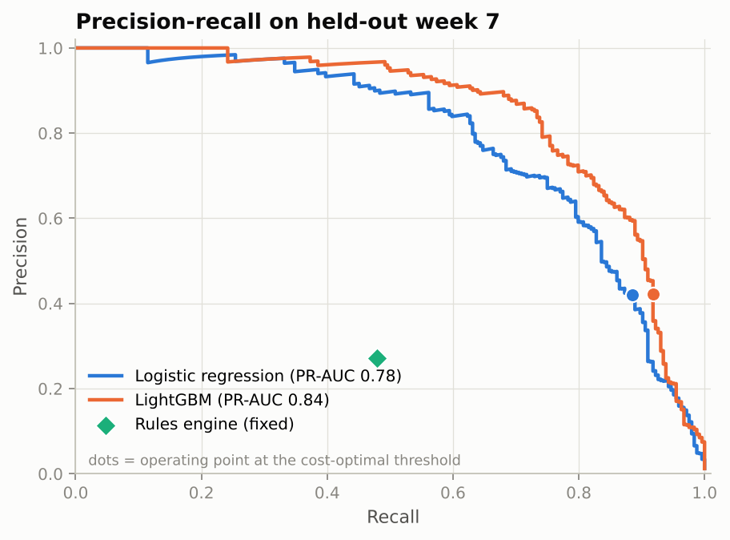
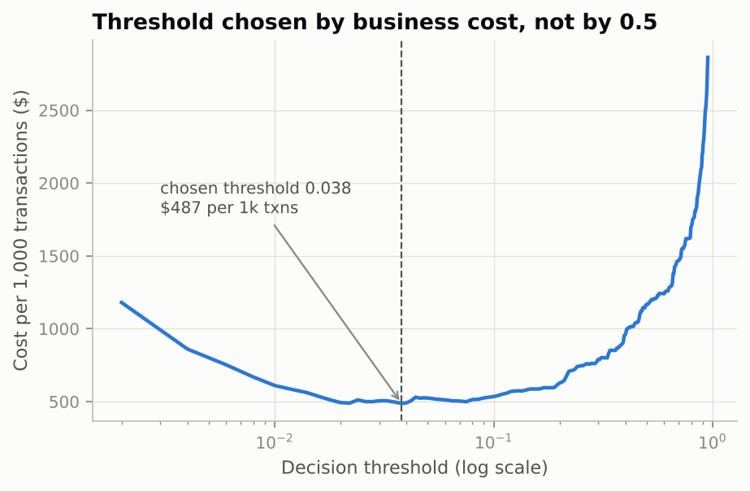
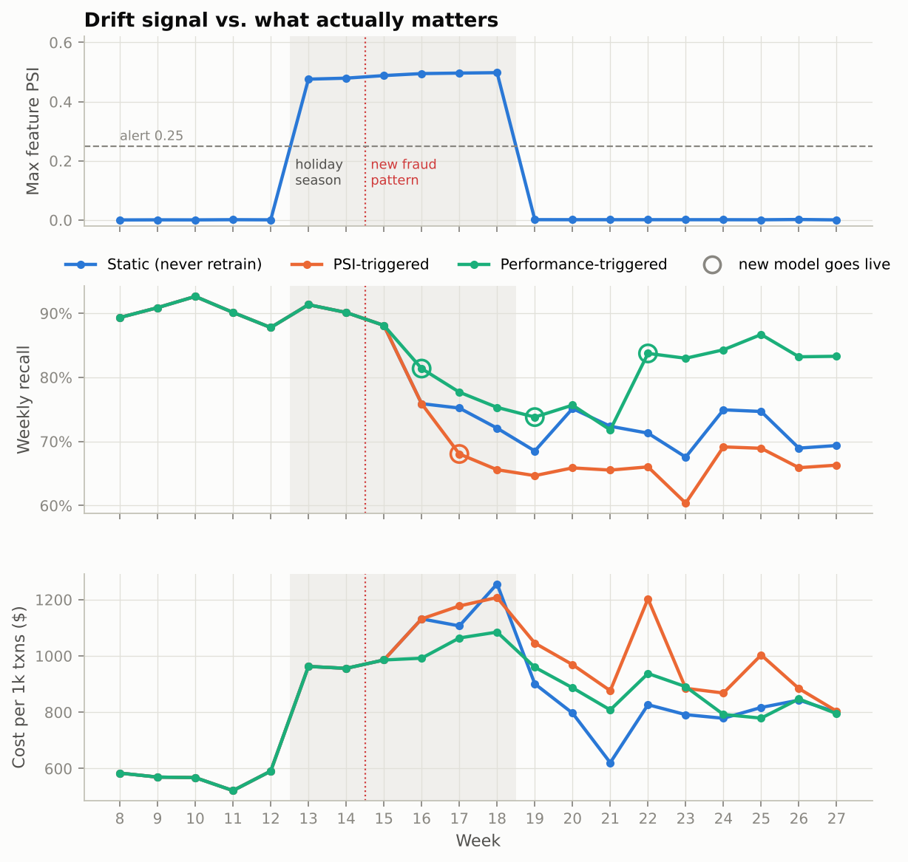
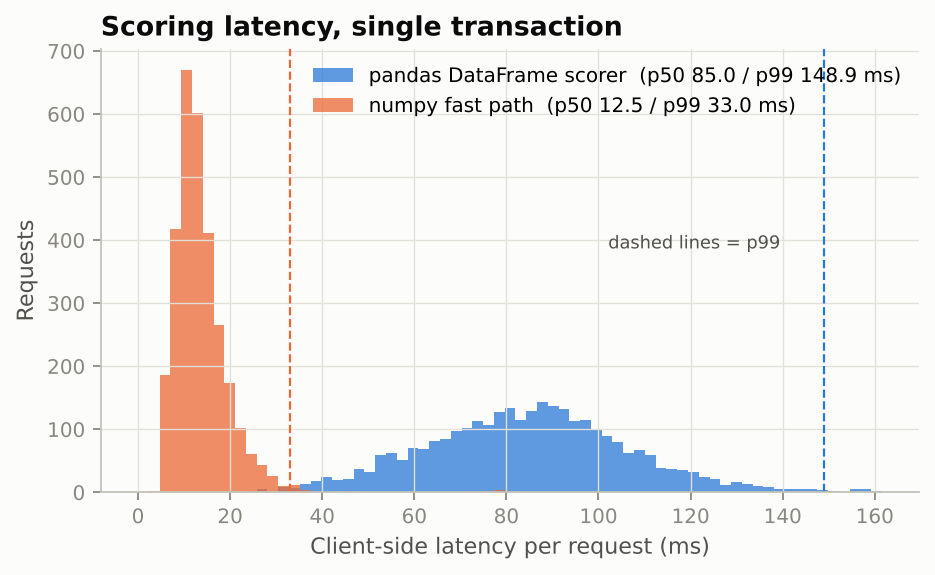

Real-time card-fraud scoring with a decision threshold chosen by business cost, drift monitoring and gated retraining, stress-tested on a simulated holiday season and a new fraud pattern.
The production model (218 boosted trees) runs entirely in your browser, and a test checks it gives the same scores as the Python service. Pick a scenario or edit any field.
Every chart is generated by the scripts in the repo from real runs on simulated data. The full write-up, including what didn't work, is in the README.



